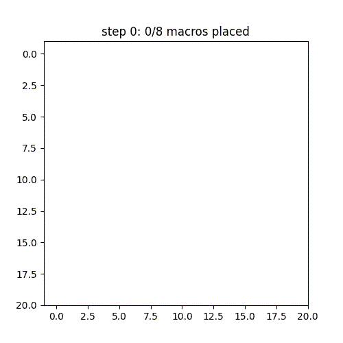
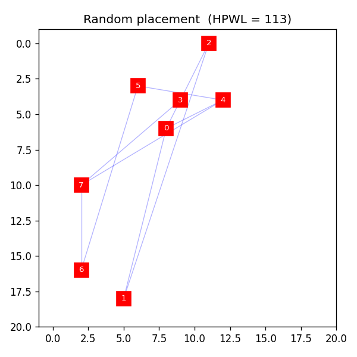
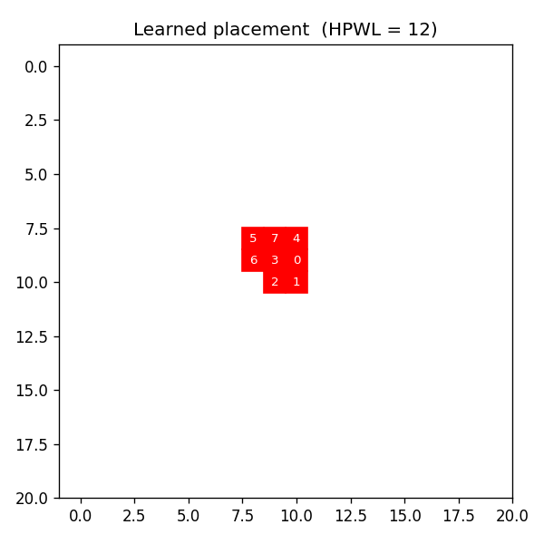

Reinforcement-learning macro placement on a gridded canvas, a from-scratch demonstrator of the Google graph-placement method.
The agent places 8 macros one at a time on a 20 by 20 grid. It is trained with MaskablePPO (Maskable Proximal Policy Optimization): action masking forbids placing on an occupied cell, so overlap is impossible. The reward is the negative HPWL (Half-Perimeter WireLength) of the netlist, so the agent learns to keep connected macros close.

The trained agent placing macros one at a time (watch it build a compact cluster).

Random placement: HPWL around 100. Macros scattered, long crossing nets.

Learned placement: HPWL around 12. Overlap-free, tightly clustered.
What this shows
The reinforcement-learning placement loop works end to end: the agent learns to minimize wirelength from the reward alone.
Action masking (forbidding occupied cells) is a structural fix for overlap, better than a soft penalty the agent can learn to exploit. This matches the illegal-position masking in the Google paper.
V1 trains on one fixed problem to validate the machinery. Version 2 randomizes the netlist and adds a held-out test set, so the agent must generalize rather than memorize.
See the repository README for the method, lineage, and roadmap.